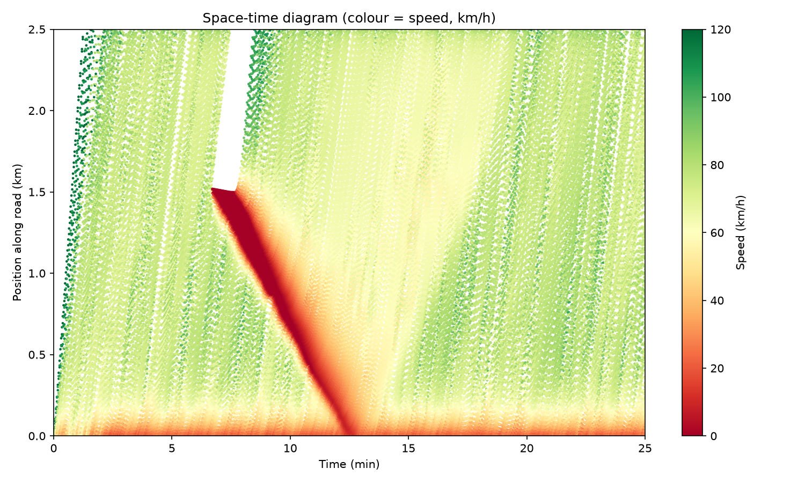
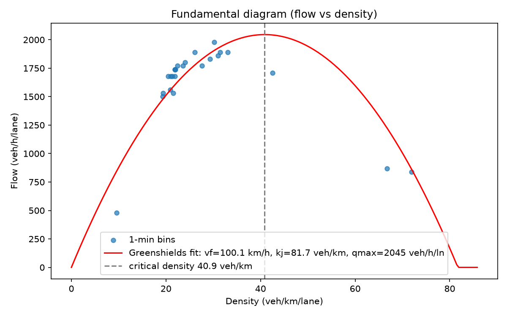
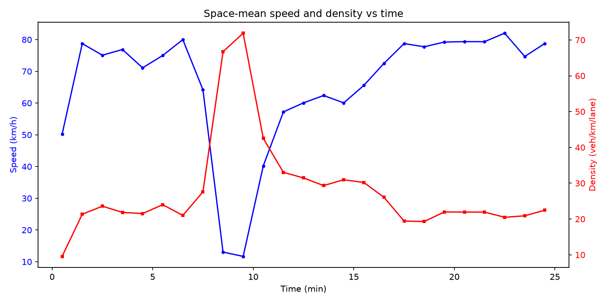
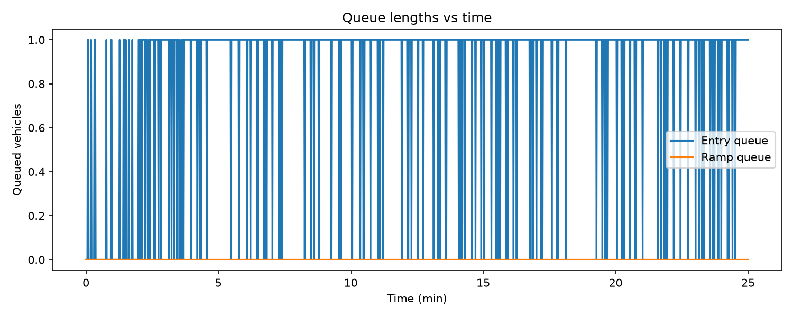

Two-lane freeway near capacity (3600 veh/h). A 60 s full blockage (incident) at x=1500 m during t=400-460 s triggers a stop-and-go wave that propagates backwards after the blockage clears, as in the Sugiyama et al. (2008) ring experiment.
| Metric | Value |
|---|---|
| Mean travel time | 148.08 s |
| Median travel time | 134.30 s |
| 95th percentile | 198.70 s |
| Free-flow travel time | 82.83 s |
| Mean delay | 65.25 s |
Backward wave speed -15.64 km/h (R² = 0.999, 138 front samples)
vf = 100.1 km/h, kj = 81.7 veh/km, qmax = 2045 veh/h/ln, R² = 0.785




Generated by traffic-flow-simulator (IDM + MOBIL). See docs/RESEARCH.md.